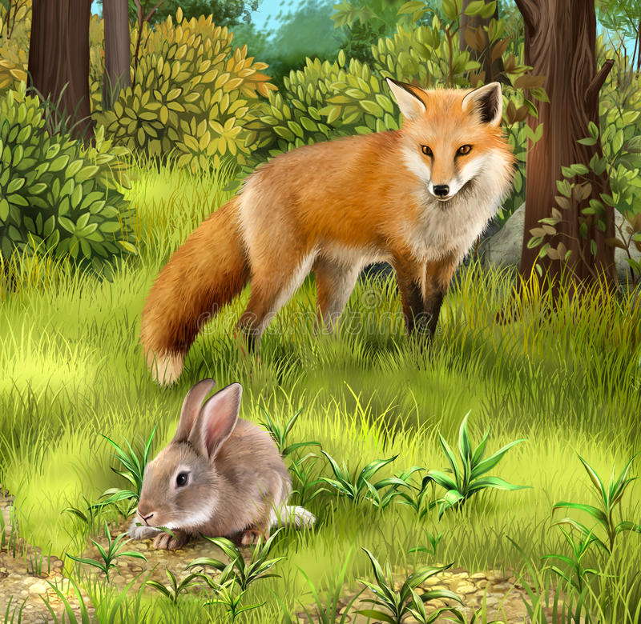

UBICACION |
HABITAD |
ALIMENTACION |
AGRUPACION |
Los vulpinos (Vulpini) son una tribu de mamíferos carnívoros incluidos en la familia de los cánidos. Se conocen comúnmente como zorros, zorras, raposos o raposas.
El zorro es un animal muy versátil en lo que respecta al medio ambiente donde vive. Se encuentran en todo el hemisferio norte, también se han introducido con éxito en muchas áreas de Australia. Lo interesante es que existen más hábitats del zorro en ciudades que en cualquier otro lugar. Esto puede resultar difícil para ellos y para los seres humanos debido a que están en los mismos territorios. zorros
Los zorros son capaces de vivir en las llanuras, en las montañas, en el desierto y en las áreas urbanas y suburbanas. El hecho es que son capaces de cambiar los alimentos que comen para vivir a lo que este fácilmente disponible para ellos, esto forma parte de la notable adaptación que tienen. En los meses de invierno, el zorro tiene que crear sus madrigueras bajo la tierra, esto demuestra la capacidad de supervivencia que tienen estos animales en una variedad de hábitats diferentes.
Muchas personas creen que el zorro es un animal carnívoro, pero no es así, los zorros son animales omnívoros, ya que consumen casi cualquier tipo de alimento. La dieta para el zorro es muy diversa, por lo qué son capaces de vivir en los diferentes lugares que existen. Los zorros tienden a consumir animales pequeños como roedores, conejos y ardillas. El zorro es un tipo de perro que caza por su propia cuenta en lugar de cazar en grupo. Por lo tanto, necesitan encontrar a sus presas con facilidad. Los pájaros pequeños también son parte de su alimentación en muchas áreas, esto a menudo es un alimento de temporada, en dependencia del clima en donde estén. Se sabe que el zorro se alimenta de las uvas y las frutas que estacionalmente pueden crecer en diferentes áreas. Estos animales tienen una memoria increíble, así que van a regresar a esos lugares cada año para beneficiarse de los alimentos que allí se ofrecen.

A diferencia de muchos cánidos, los zorros no son usualmente animales de manada. Son solitarios cazando su presa (especialmente roedores). Empleando una técnica de salto practicada desde una edad muy temprana en la que, dependiendo del terreno, utiliza una técnica u otra.